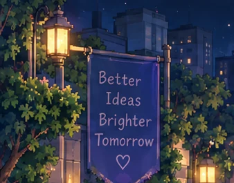
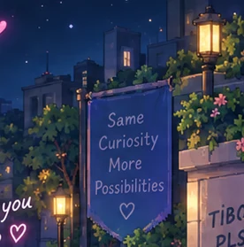
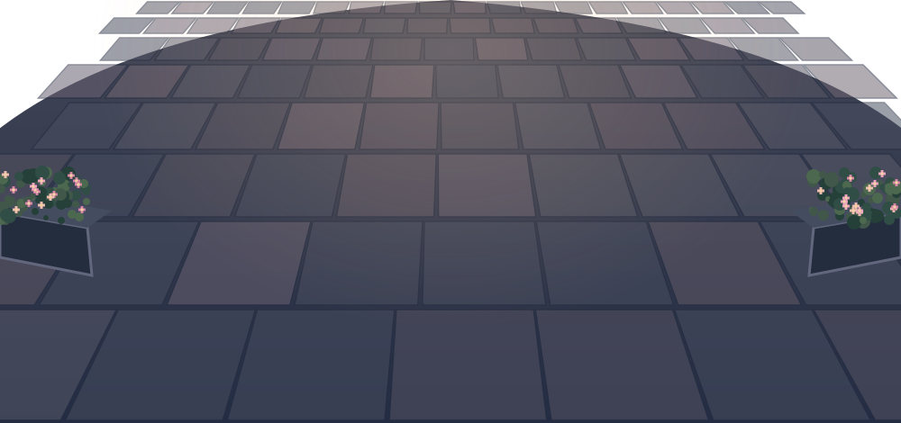

LOCAL DEMO클릭이 쌓이면 함께 절하는 캐릭터가 늘어납니다. X 상태도 연출용이며, 실시간 소식은 아직 연결하지 않았어요.
No live server
광장을 불러오는 중…


Saint Tibo, one more. ♥
토큰은 바닥났고, 이제 남은 건 기도뿐.

✦✧✦
♥♥♡♥✦✦
PATRON SAINT OF ONE MORE RESETSAINT TIBO리셋의 성인 · 비공식 팬아트
성 티보여,
토큰을… ♡